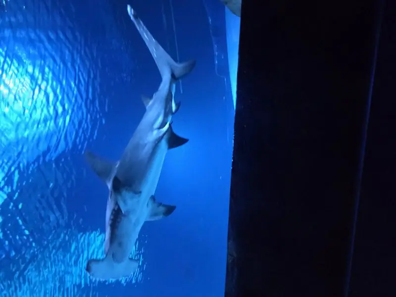
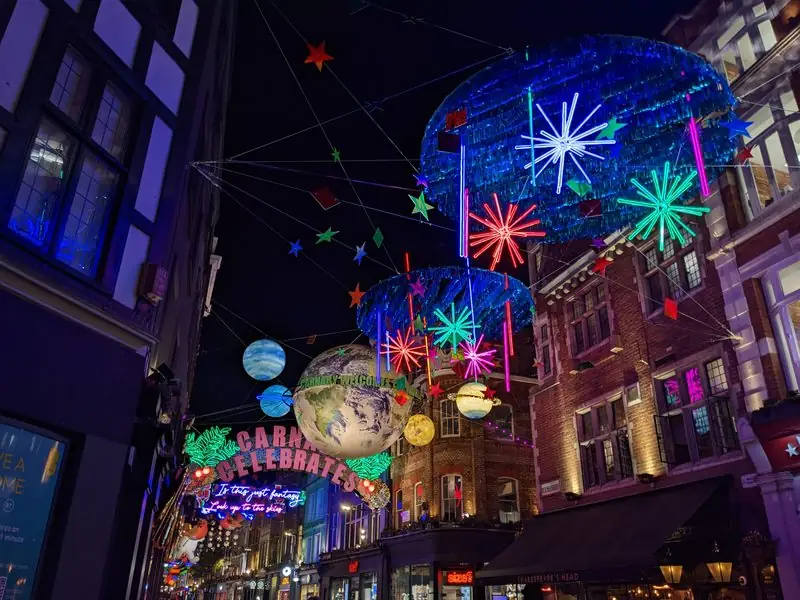
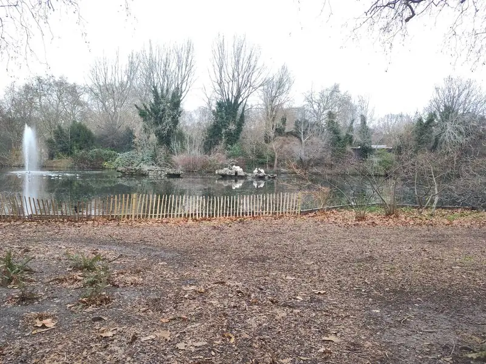
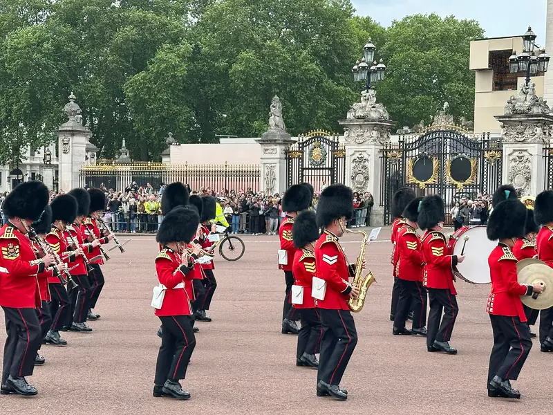
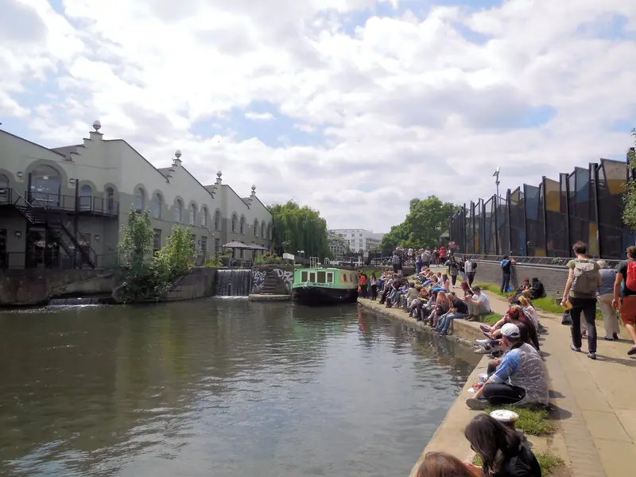

05:15
05:15
Aeroporto di Bologna
Due ore prima del volo: banco British Airways, controlli e gate.
🧭 Portami qui 🚗 in autofoto: Threecharlie / CC BY-SA 3.0
LondraDisponibile offline
Viaggio di famiglia15–17 novembre 2026 · 3 giorni, 2 notti
Alessandro, Vale e Olly
✓ Disponibile offline
🖼️ Versione per immagini, per OllyScegli il giorno qui sotto, o scorri di lato. Gli orari sono una proposta, ricavata da voli, check-in e distanze: vanno confermati.
Arrivo, acquario, riposo e Hamleys col buio
▼
05:15
Due ore prima del volo: banco British Airways, controlli e gate.
🧭 Portami qui 🚗 in autofoto: Threecharlie / CC BY-SA 3.0
 07:00
07:00
BLQ → LHR · 2 h 40 di volo. Si atterra alle 08:40, ora di Londra.
Airbus A320neo. A Londra l’orologio va indietro di un’ora: si guadagna un’ora di fuso.
foto: Alex Noble / CC0
 08:40
08:40
Terminal 5. Passaporti allo sportello con l’agente: i varchi automatici sono dai 10 anni in su. Niente nastro bagagli, solo bagaglio a mano.
💂 Domenica c’è solo la Sunday Parade alle 10:00: non compatibile con l’atterraggio alle 08:40. Se passate da Whitehall, sentinelle a cavallo 10:00–16:00.
foto: Warren Rohner / CC BY-SA 2.0
 09:50
09:50
⏱️ ~65 min · Piccadilly line
🧳 Si scende a Waterloo: deposito bagagli a 5 min.
📌 Domenica 15/11 la Elizabeth line è chiusa in centro fino alle 10:15: da T5 si prende la Piccadilly line fino a Piccadilly Circus, poi la Bakerloo fino a Waterloo.
Olly gratis in entrambi i casi. Contactless o telefono, una carta per adulto.
Piccadilly: per esempio 09:53 → Waterloo 10:54, poi 10:05, 10:17. Si scende a Waterloo, bagagli da Food Express (Bounce) in Chicheley St alle 11:00, poi il Southbank.
foto: Chris McKenna (Thryduulf) / CC BY-SA 4.0
⏱️ 10 min
📍 7 Chicheley St, London SE1 7PY · aperto 24 ore ✅ verificato 8/11
✅ Prenotato domenica 15/11, 10:30–15:30, 3 valigie regolari, rif. ZGHR956Q
Minimarket di fronte alla stazione di Waterloo, lato London Eye. Mostra il QR dall’app Bounce (sezione Prenotazioni, c’è anche il PIN). Le borse piccole restano con noi: documenti, farmaci, power bank. Restiamo finché non mettono via le valigie.
Riserva: Stasher London Eye, dentro County Hall, Belvedere Rd SE1 7PB · 7:00–23:00.
🧭 Portami qui 🚶 a piedi 11:15
11:15
📖 Cosa vediamo Il grande centro culturale sul Tamigi, nato per il Festival of Britain del 1951. A novembre lungo il fiume c’è il mercatino d’inverno con le casette di legno.
👧 Per Olly «Le casette di Natale sul fiume, con la ruota gigante lì vicino.»
⏱️ 45 min
Lungofiume e mercatino, poi alle 12:00 il pranzo da Giraffe, lì accanto. Winter Market aperto tutti i giorni dal 2/11/2026 al 3/1/2027: bancarelle 11:00–22:00, bar 11:00–23:00, sul Queen’s Walk sotto l’Hungerford Bridge ✅ verificato 8/11 (southbankcentre.co.uk). Dal 15/11, la domenica 12:00–17:00, anche la SoLo Craft Fair.
🍽️ Pranzo: Giraffe ✅ prenotato, Royal Festival Hall, Riverside Level 1 (sul lungofiume, accanto alle bancarelle). Tavolo per 3 alle 12:00, conferma n. 130239. Prenota · Scheda · Maps
🧁 Merenda: churros o cioccolata alle bancarelle del mercatino, all’uscita dal SEA LIFE (verso le 14:30), se resta qualche minuto prima di ritirare i bagagli alle 14:40. Se all’arrivo piove, si entra subito da Giraffe e le bancarelle si guardano dopo.
🧭 Portami qui 🚇 coi mezzifoto: Robin Stott / CC BY-SA 2.0
⏱️ 1 h
⏰ tavolo alle 12:00
✅ Prenotato domenica 15/11 alle 12:00, tavolo per 3, a nome Alessandro Vizzini, conferma n. 130239.
📍 Royal Festival Hall, Riverside Level 1, London SE1 8XX · sul lungofiume, accanto alle bancarelle
Al coperto: se piove si entra anche prima. Alle 13:00 si esce e in 5 minuti a piedi si è al SEA LIFE.
👧 Per Olly, dal menù bambini: bocconcini di pollo impanati («kids chicken strips»), con patatine e piselli: sono i nuggets. In alternativa il pesce in pastella o la pasta al pomodoro. La pizza c’è, ma non so se è alta. Dolce: churros col cioccolato o gelato. Da bere succo di mela o latte.
🍴 Per noi due: il fish and chips e lo spiedo di pollo appeso («chicken swinging kebab»), che è il piatto simbolo e arriva con insalata greca, hummus e focaccina. Sono piatti completi: non servono contorni. Attenzione al piccante: nachos, mac & cheese col chorizo e patatine «topped».
💷 Stima del conto stimato: col nostro consiglio ~£58 (~€70) in tre, servizio al 12,5% compreso (facoltativo); non c’è coperto. Menù bambini: piatto £8, dolce £2, bibita £2. I prezzi vengono dai menù in PDF della catena: al South Bank possono essere un po’ più alti.
🧾 Il nostro ordine, da leggere al cameriere
 13:05
13:05
📖 Cosa vediamo L’acquario dentro County Hall, il palazzo che era la sede del governo di Londra. Squali, pinguini, tartarughe e un tunnel sotto l’acqua.
👧 Per Olly «Camminiamo sotto gli squali!»
⏱️ 1 h 25
Domenica 10:00–17:00. Ingresso in qualsiasi momento, biglietti già presi. Zaini fino a 30 litri; guardaroba non c’è.
Squali, pinguini e il tunnel sottomarino, dentro County Hall.
foto: ʘx / CC BY-SA 4.0
⏱️ 10 min
📍 7 Chicheley St, London SE1 7PY · aperto 24 ore ✅ verificato 8/11
5 min a piedi dall’uscita del SEA LIFE. La prenotazione copre fino alle 15:30.
🧭 Portami qui 🚶 a piedi📖 Cosa vediamo Il Tamigi è il fiume di Londra. In pochi minuti si vedono dall’acqua il Parlamento con il Big Ben e la London Eye.
👧 Per Olly «Andiamo in barca sul fiume della città.»
⏱️ 20 min
⛴️ Imbarco: London Eye Waterloo Pier · sbarco: Embankment Pier
Uber Boat, si paga con la carta contactless al molo. Adulti £10,80 a testa (peak, contactless; la domenica è tutta «peak»), Olly gratis (fino a 4 anni compresi).
Orario invernale (dal 9/11), domenica verso est: dal London Eye Pier alle 14:53 (Embankment 14:59) e alle 15:05 (Embankment 15:10), poi 15:21. La traversata dura 5–6 minuti; lo scalo a Embankment c’è ✅ verificato 10/11 (orario ufficiale Thames Clippers). Se si perde: metro da Waterloo, Bakerloo diretta a Piccadilly Circus.
🧭 Portami qui 🚶 a piedi⏱️ ~15 min
Embankment station, Bakerloo line diretta, 2 fermate.
🧭 Portami qui 🚇 coi mezzi 15:30
15:30
📖 Cosa vediamo Una storica drogheria italiana di Soho, con pasta fresca, salumi e formaggi. Qui facciamo la spesa per la cena.
👧 Per Olly «Il negozio italiano, prendiamo la pasta per stasera.»
⏱️ 15 min
18 Brewer Street, 2 minuti da casa. Domenica 11:00–18:00. Piano B: Whole Foods a Piccadilly Circus, aperto fino alle 18:00.
Gastronomia italiana: pasta fresca, salumi, sughi. Si compra prima di salire a casa, così la cena è già in frigo.
foto: Ewan-M / CC BY-SA 2.0
 15:45
15:45
⏱️ 45 min
Chiave digitale Clevio, ingresso libero dopo le 15:00. Zaini giù e riposo vero, dopo la sveglia all’alba.
🧭 Portami qui 🚶 a piedifoto: No Swan So Fine / CC BY-SA 4.0
 16:30
16:30
📖 Cosa vediamo Il negozio di giocattoli più antico del mondo, aperto nel 1760, su Regent Street. Sette piani e commessi che fanno vedere i giochi.
👧 Per Olly «Il palazzo dei giocattoli: sette piani!»
⏱️ 1 h
188-196 Regent Street, 3-4 minuti a piedi. Domenica 12:00–18:00. La sorpresa per Olly, dopo il riposo e col buio (tramonto ~16:10).
Con le luci di Regent Street, accese dal 5/11. Le dimostrazioni dei commessi sono visive.
foto: DAVID HOLT / CC BY-SA 2.0
 17:30
17:30
📖 Cosa vediamo La via della moda della Londra anni ’60, a due passi da casa. A Natale si riempie di luci e decorazioni sospese.
👧 Per Olly «La via sotto casa tutta illuminata.»
Sulla via di casa da Hamleys, due minuti a piedi: a quell’ora sono accese da un pezzo.
🧭 Portami qui 🚶 a piedifoto: Christine Matthews / CC BY-SA 2.0
18:00
Con la spesa di Lina Stores, già in frigo dal pomeriggio.
🧭 Portami qui 🚶 a piedifoto: No Swan So Fine / CC BY-SA 4.0
Quasi tutto a piedi, una sola tratta in metro
▼
09:10
Colazione in zona e via a piedi: Trafalgar Square è a venti minuti.
🧭 Portami qui 🚶 a piedifoto: No Swan So Fine / CC BY-SA 4.0
 09:30
09:30
📖 Cosa vediamo La piazza più famosa di Londra. Al centro la colonna dell’ammiraglio Nelson, ai piedi quattro grandi leoni di bronzo, in fondo la National Gallery.
👧 Per Olly «Andiamo a trovare i quattro leoni giganti.»
⏱️ 15 min
I leoni e le fontane. Bagno: National Gallery (apre alle 10:00) o Café in the Crypt.
L’albero norvegese di solito arriva a inizio dicembre: il 16 novembre potrebbe non esserci ancora.
foto: Diliff / CC BY-SA 3.0
 09:50
09:50
📖 Cosa vediamo La caserma storica della guardia a cavallo del Re. Dalle 10 alle 16 due soldati a cavallo, con elmo e corazza, stanno immobili nelle garitte sulla strada.
👧 Per Olly «I soldati a cavallo che non si muovono mai. Si guardano, ma i cavalli non si toccano.»
⏱️ 15 min
Alle 10:00 le sentinelle a cavallo prendono servizio: 5 min di cavalli da vicino.
🧭 Portami qui 🚶 a piedifoto: Lewis Clarke / CC BY-SA 2.0
 10:05
10:05
📖 Cosa vediamo Big Ben è il nome della grande campana dentro la torre dell’orologio. La torre fa parte del Palazzo di Westminster, dove si riunisce il Parlamento.
👧 Per Olly «L’orologio più famoso del mondo. Ascoltiamo se suona!»
⏱️ 10 min
Foto veloce, poi Birdcage Walk.
🧭 Portami qui 🚶 a piedifoto: Domob / CC BY-SA 4.0
 10:15
10:15
📖 Cosa vediamo La caserma delle guardie a piedi. Qui la nuova guardia si mette in fila, viene controllata e poi parte con la banda verso Buckingham Palace per il Cambio della Guardia.
👧 Per Olly «I soldati con la giacca rossa e il cappellone nero, e la banda che suona.»
⏱️ 45 min
⏰ entro le 10:20
Arrivo entro le 10:15–10:20 alle ringhiere, lato Palazzo. 10:40 ispezione e banda in cerchio. 10:57 la colonna esce con la Band of the Scots Guards. Non seguirla fino ai cancelli.
☔ Con pioggia forte la cerimonia può essere cancellata fino alle 10:45. Se alle 10:30 la banda non si schiera → piano B.
💂 Verificato ✅ calendario ufficiale
Lun 16/11 · Guard Change ore 11:00 · 26 Engineer Regiment · Band of the Scots Guards
Fonte: calendario ufficiale Household Division, letto il 23/10/2026
Una sola banda, la Band of the Scots Guards, e nessun «NO MUSIC» ✅ verificato 8/11 (calendario ufficiale; il «NO MUSIC» del 16/11 riguarda Windsor).
💂 Curiosità per Olly: oggi la guardia la fanno i soldati del Genio, gli ‘Shamrocks’: stessa giacca rossa e cappellone di pelo!
📅 Calendario ufficialefoto: Adrian Snood / CC BY 2.0
 11:00
11:00
📖 Cosa vediamo Il parco reale più antico di Londra. Sul lago vivono i pellicani da secoli; dal ponte blu si vedono Buckingham Palace e la London Eye.
👧 Per Olly «Andiamo a cercare i pellicani con il becco enorme.»
⏱️ 40 min
Pausa seduti, papere e pellicani. Bagno: St James’s Café.
☕ Merenda: St James’s Café, dentro il parco. Cioccolata calda e qualcosa da mangiare al caldo; orario invernale 8:00–16:00 (Royal Parks, letto il 13/11). Senza prenotazione. Scheda · Maps
🧭 Portami qui 🚶 a piedifoto: Colin / CC BY-SA 3.0
 11:40
11:40
📖 Cosa vediamo La casa del Re a Londra. Davanti c’è il monumento alla regina Vittoria con un angelo dorato in cima. Se sul tetto c’è la bandiera reale, il Re è in casa.
👧 Per Olly «La casa del Re! Guardiamo se c’è la sua bandiera.»
⏱️ 20 min
⏰ alle 11:40 per i cavalli
Buckingham Palace e Victoria Memorial, lì accanto: rientra la Old Guard con la banda e passa la Household Cavalry a cavallo (~11:45).
🧭 Portami qui 🚶 a piedifoto: Diliff / CC BY-SA 3.0
📖 Cosa vediamo I bus rossi a due piani sono un simbolo di Londra. Dal piano di sopra si vede la città come da un balcone.
👧 Per Olly «Saliamo al piano di sopra, davanti, come i piloti.»
⏱️ ~20 min
Piano di sopra, posti davanti. Dal finestrino il Ritz, Hyde Park Corner con il Wellington Arch e Hyde Park. Si scende a Knightsbridge, Harrods a 2 min. Niente scale mobili.
🚌 Dalla fermata H di Green Park station: bus 14 (scende a Knightsbridge/Harrods, fermata KC) o 9 (fermata KE). Il 22 non passa da Harrods ✅ verificato 8/11
Alternativa: Piccadilly line Green Park → Knightsbridge (2 fermate). Se usate la metro: a Knightsbridge l’ingresso con ascensori è Hooper’s Court, su Brompton Road, poco a sud dell’ingresso principale ✅ verificato 8/11; a Green Park ci sono 5 ascensori, nessun guasto segnalato ✅ verificato 14/11.
🧭 Portami qui 🚌 coi mezzi⏱️ 1 h
⏰ tavolo alle 12:45, tenuto 15 minuti
✅ Prenotato lunedì 16/11 alle 12:45, 3 persone, Main Restaurant, rif. 6LAW2Y3M8RSG. Tel. +44 20 7730 1234.
Steakhouse al quinto piano di Harrods. Il tavolo si perde dopo le 13:00. Se non si va, o si è in meno, addebitano £45 a persona.
👧 Per Olly c’è il menù bambini: bocconcini di pollo impanati con patatine («chicken goujons with fries», £15 · ~€18), in pratica i nuggets. In alternativa la pasta al pomodoro. Dolce: gelato alla vaniglia (£4 · ~€5). Da bere acqua o limonata.
🥩 Per noi due, spendendo poco: un flat iron (£32) e una cotoletta di pollo con Caesar salad (£32), oppure due flat iron; due contorni da dividere a £15 (patatine e champ, il purè irlandese) e una salsa (£4,50). I piatti non conviene dividerli: la bistecca arriva da sola, 200 g, e la convenienza sta nei contorni a coppia. Da evitare per il prezzo: tomahawk (£160), Wagyu, filetto.
🍷 Vino: rosso Pauillac Harrods 2019, il meno caro e il più adatto alla bistecca: in caraffa da 375 ml (£32 · ~€38) sono tre calici in due. In alternativa Valpolicella Ripasso (calice £12), più morbido, va bene anche col pollo. Bollicine: Harrods Brut Premier Cru (calice £20 · ~€24), Champagne vero al prezzo più basso; oppure Albury Blanc de Noirs 2018 (calice £19), spumante inglese millesimato.
💷 Stima del conto stimato: ~£160–190 (~€190–230) in tre, con acqua, vino rosso, coperto (£1 a testa) e servizio al 12,5% (facoltativo). Con due calici di Champagne ~£235 (~€280). Cambio usato: £1 = €1,20 (BCE del 13/11: 1,197).
🧾 Il nostro ordine, da leggere al cameriere
Un pranzo al tavolo può durare più di un’ora: il tempo in più si toglie al giro da Harrods, il bus resta alle 14:25–14:30. The Grill on Fifth
↪️ Se salta: Dining Hall al piano terra, ingresso Door 8 su Brompton Road, senza prenotazione (Pasta Evangelists, lunedì 11:30–21:00).
🧭 Portami qui 🚶 a piedi 13:45
13:45
📖 Cosa vediamo Il grande magazzino più famoso di Londra, a Knightsbridge dalla metà dell’Ottocento. Da vedere: le vetrine di Natale, la scala mobile in stile egizio e il reparto giocattoli.
👧 Per Olly «Il negozio gigante con le vetrine di Natale.»
⏱️ 40 min
Reparto Natale e giocattoli, poi si esce. Il resto dalle vetrine. Harrods lunedì 10:00–21:00 (Google, 7/11).
🧭 Portami qui 🚶 a piedifoto: Editor5807 / CC BY-SA 4.0
⏱️ ~15 min
Bus 9 o 52 dalla fermata KE (davanti a Harrods) fino a Royal Albert Hall (RC) ✅ verificato 8/11.
🧭 Portami qui 🚌 coi mezzi📖 Cosa vediamo La regina Vittoria fece costruire questo monumento per il marito Alberto, morto nel 1861: lui è la statua dorata seduta sotto la torre. Di fronte, la Royal Albert Hall, la sala dei concerti rotonda.
👧 Per Olly «Il principe d’oro sul trono, e di fronte il teatro tondo come una torta.»
⏱️ 1 h 05
Albert Memorial, Kensington Gardens W2 2UH · parco aperto 6:00–21:30
La Royal Albert Hall (Kensington Gore SW7 2AP) si vede da fuori: è proprio di fronte al monumento.
☕ Pausa seduti con una cioccolata calda: Café Bar della Royal Albert Hall, piano terra, Door 12, aperto dalle 9 nei giorni di spettacolo, senza prenotazione (lunedì 16 c’è un concerto alle 18:45). Orario di chiusura stimato.
🧭 Portami qui 🚶 a piedi⏱️ ~25 min
~800 m stimato, in discesa. Bagno o sosta: Science Museum a metà strada.
🧭 Portami qui 🚶 a piedi⏱️ ~20 min
Bus 14 o 74 dalla fermata KC fino a Victoria and Albert Museum (N), poi ~5 min a piedi su Exhibition Road stimato. Alternativa: Piccadilly line Knightsbridge → South Kensington e tunnel pedonale coperto.
🧭 Portami qui 🚌 coi mezzi📖 Cosa vediamo Il museo della scienza e delle invenzioni, gratuito. Al piano -1 c’è The Garden, un’area gioco per i bambini dai 3 ai 6 anni con acqua, costruzioni, luci e suoni.
👧 Per Olly «Il posto dove si gioca con l’acqua e le luci.»
🌧️ Piano pioggia: compare con «Piove» acceso
⏱️ 1 h 35
⏰ ingresso 14:45–15:15
Exhibition Rd, London SW7 2DD · aperto 10:00–18:00
Biglietti presi, tenuti come piano pioggia. The Garden (livello -1, 3–6 anni: acqua, costruzioni, luci e suoni) e Pattern Pod (livello 0, gratuita).
🧸 The Garden e Pattern Pod sono gratuiti ✅ verificato 8/11. Grembiuli non forniti: maglietta di ricambio per Olly. Se in fase di prenotazione compaiono slot a parte per The Garden, prenotarli.
🧁 Merenda: Energy Café, al piano terra, aperto fino alle 17:30. The Diner, quello col menù bambini, chiude alle 16:00: se volete quello, andateci appena entrati (orari Benugo, letti il 13/11). The Diner
🧭 Portami qui 🚶 a piedi⏱️ 10 min
~200 m su Exhibition Road / Cromwell Road. L’ingresso al museo è alle 16:30, non prima.
🧭 Portami qui 🚶 a piedi 16:30
16:30
📖 Cosa vediamo Il museo di storia naturale, in un palazzo che sembra una cattedrale, con animali scolpiti sulla facciata. Nella sala grande è appeso lo scheletro di una balenottera azzurra; poi ci sono i dinosauri.
👧 Per Olly «Andiamo a vedere la balena gigante e i dinosauri.»
⏱️ 1 h 15
Ingresso a fascia oraria alle 16:30, non prima. Chiude alle 17:50. In fondo a Exhibition Road.
I tre biglietti sono già presi: sono nella sezione Biglietti, da mostrare allo schermo.
foto: Diliff / CC BY-SA 3.0
 18:00
18:00
📖 Cosa vediamo La grande via curva dei negozi, illuminata per Natale. All’inizio c’è Piccadilly Circus, con gli schermi giganti e la statua con le ali.
👧 Per Olly «La strada delle luci e degli schermi enormi.»
Gli angeli sospesi sopra la strada, sulla via del rientro verso Soho. Cena in zona.
🧭 Portami qui 🚇 coi mezzifoto: Oast House Archive / CC BY-SA 2.0
LEGO Store, fish & chips, mercato coperto, poi Heathrow
▼
10:30
10:30 check-out → Bounce Piccadilly Circus, 53 Rupert St (prenotato, 3 colli) → a piedi al LEGO Store di Leicester Square.
Bounce Rupert St è a 2 minuti dalla stazione della Piccadilly line per Heathrow e aperto 24 ore: alle 15:00 si ritirano i bagagli e si riparte da lì. Riserva: Bounce Broadwick St, a 60 m da casa (martedì 9:00–23:00).
foto: No Swan So Fine / CC BY-SA 4.0
⏱️ 10 min
📍 Soho Mart, 53 Rupert St, London W1D 7PH · aperto 24 ore ✅ verificato 8/11
✅ Prenotato martedì 17/11, 10:30–15:30, 3 valigie regolari, rif. CLVQZVM4. QR e PIN nell’app Bounce.
~5 min a piedi da casa, a 2 min dalla stazione della Piccadilly line per Heathrow.
Riserva: Bounce Broadwick St, 43 Broadwick St W1F 9QN · martedì 9:00–23:00.
🧭 Portami qui 🚶 a piedi📖 Cosa vediamo Due piani di LEGO in Leicester Square, con grandi modelli di Londra costruiti con i mattoncini: il Big Ben e un vagone della metropolitana in cui ci si può sedere.
👧 Per Olly «Un vagone della metro fatto tutto di mattoncini.»
⏱️ 1 h 05
📍 3 Swiss Court, London W1D 6AP · martedì 10:00–22:00 ✅ verificato 13/11
A 5 minuti a piedi dal deposito, tutto al coperto, ingresso libero. Si resta a Soho: niente metro fino al ritiro dei bagagli.
☀️ Se non piove si può andare a Camden al posto del LEGO Store: orari e percorsi nella riga qui sotto.
🧭 Portami qui 🚶 a piedi📖 Cosa vediamo Il piatto tipico inglese: pesce fritto con patatine. Locale in stile anni ’50, il fish and chips arriva incartato come una volta.
👧 Per Olly «Pesce e patatine incartati nel giornale.»
⏱️ 1 h
📍 55–59 Old Compton Street, Soho · martedì 11:00–22:00
A 5 minuti a piedi dal LEGO Store. Fish & chips: il piatto più tipico di Londra, semplice per Olly.
👧 Menù bambini £9,95: bocconcini di pesce, fish cake o salsiccia, tutti con patatine (menù ufficiale, maggio 2026). Di martedì a mezzogiorno non serve prenotare, ma si può. Poppies Soho, prenotazioni · Menù
🧭 Portami qui 🚶 a piedi⏱️ ~10 min a piedi
Da Old Compton Street a Covent Garden si va a piedi, circa 10 minuti: niente metro. Con la pioggia, ombrello a portata.
🧭 Portami qui 🚶 a piedi 13:15
13:15
📖 Cosa vediamo Una piazza coperta che una volta era il mercato della frutta e verdura di Londra. Oggi ci sono negozi, artisti di strada e, a Natale, un grande albero e decorazioni giganti.
👧 Per Olly «Gli artisti di strada e l’albero di Natale gigante.»
⏱️ 1 h 30
Il mercato coperto e gli artisti di strada: con la pioggia si sta sotto la galleria. Il pranzo è già fatto. Si riparte alle 14:45.
🥞 Merenda: Crème de la Crêpe, dentro il mercato (Unit 29, The Market Building): crêpe dolci e salate. Senza prenotazione; orari stimato (10–20:30 o 11–19:30 secondo la fonte). Scheda e menù · Maps
🧭 Portami qui 🚶 a piedifoto: Dietmar Rabich / CC BY-SA 4.0
 14:45
14:45
⏱️ ~15 min fino a Piccadilly Circus
📌 Volo alle 18:10: alle 14:45 si parte da Covent Garden. I bagagli sono a 2 minuti dalla stazione di Piccadilly Circus: si ritirano e si riparte dalla stessa linea.
Se la Piccadilly line ha problemi: Elizabeth line da Tottenham Court Road fino a Heathrow T5 (36 min, £15,50 a testa).
foto: DiscoA340 / CC BY-SA 4.0
⏱️ 10 min
⏰ alle 15:00
📍 Soho Mart, 53 Rupert St, London W1D 7PH · aperto 24 ore ✅ verificato 8/11
Ritiro, si torna in stazione: Piccadilly line diretta per Heathrow T5, ~55 min. Piccadilly Circus ha solo scale mobili.
🧭 Portami qui 🚶 a piedi 16:10
16:10
Circa 50 minuti di metro dal centro. Check-in, controlli e gate al Terminal 5.
🍽️ Cena prima del volo: dopo i controlli c’è Giraffe, lo stesso di domenica, con menù bambini stimato (la pagina di Heathrow non ha data). In alternativa Pilots Bar & Kitchen. Giraffe a Heathrow
🧭 Portami qui 🚇 coi mezzifoto: Andrew Milligan sumo / CC BY 2.0
18:10
LHR → BLQ · 2 h 15 di volo. In Italia l’orologio va avanti di un’ora.
Airbus A320.
foto: Alex Noble / CC0
 21:25
21:25
Si atterra al Marconi alle 21:25, ora italiana.
foto: Ex13 / CC BY-SA 3.0
Tocca un codice per aprirlo a schermo pieno. Funzionano anche senza rete.
Appartamento · Booking 594677715179 Beak Street, W1F 9SU · indirizzo per il taxi più sotto SEA LIFE · 3 QRDomenica 15, ingresso in qualsiasi momento · uno per persona Science Museum · 1 QRLunedì 16, ingresso 14:45–15:15 · un QR per tutti e tre🅿️ Parcheggio aeroporto · domenica all’ingresso, martedì sera all’uscita
€ 63,00 Pagato
Tenere il QR a portata di mano su questa pagina all’ingresso del parcheggio (P1, Bologna) — nessuna stampa necessaria.
Nessuna fascia oraria: si entra quando si arriva. Mostrare i QR al personale all’ingresso di County Hall, uno per persona. Nessuna stampa necessaria.
772334430770151846
ID biglietto 152344597
773215047000220012
ID biglietto 152344597
777155289086963187
ID biglietto 152344598
£ 96,00 Pagato
Un solo QR per tutto l’ordine: 2 adulti + 1 bambina. Ingresso gratuito, fascia oraria da rispettare. Piano pioggia del lunedì.
ON18896320
Biglietti 43269483 (bambina) · 43269484 · 43269485 (adulti)
Gratuito Prenotato
1001401807011726169
1001401807011726170
1001401807011726171
⏰ Ingresso a fascia oraria — non presentarsi prima delle 16:30. Museo aperto 10:00–17:50, ultimi ingressi in galleria verso le 17:30.
Order ID 7800197 · South Kensington Admission, Natural History Museum
Domenica · Food Express (Bounce), 7 Chicheley St, Waterloo · ✅ Prenotato 10:30–15:30, 3 valigie regolari, rif. ZGHR956Q. QR e PIN nell’app Bounce.
Martedì · Soho Mart (Bounce Piccadilly Circus), 53 Rupert St · ✅ Prenotato 10:30–15:30, 3 valigie regolari, rif. CLVQZVM4. QR e PIN nell’app Bounce.
🛂 UK ETA ✅ approvate, tutte e tre
| Chi | Approvata | Valida fino al |
|---|---|---|
| Alessandro | 27/8/2026 | 27 agosto 2028 |
| Valentina | 30/9/2026 | 30 settembre 2028 |
| Olivia | 30/9/2026 | 30 settembre 2028 |
Alla frontiera basta il passaporto con cui è stata chiesta: la ETA è collegata al passaporto, non serve stampare né mostrare l’email. Se si cambia passaporto va rifatta. I numeri di riferimento sono nelle email «ETA application approved» del Home Office (cercare «ETA» in Gmail): non li scrivo qui perché il sito è pubblico.
79 Beak Street
London W1F 9SU
🔑 Check-in autonomo con chiave digitale Clevio — arriva via email ~2 giorni prima dell'arrivo, ingresso libero dopo le 15:00. Verificare che il link/dominio sia legittimo (clevio.io o dominio ufficiale) e che non venga richiesto alcun pagamento in quel passaggio.
Da sfogliare insieme prima di partire: guardare le foto vere di ciò che vedrà l'aiuta ad anticipare, riconoscere e nominare.






Un colore per ogni giornata. Linea piena = a piedi, tratteggiata = metro.
Il più vicino a ogni tappa, con la riserva
▼Non verificati: un tentativo, non una certezza
▼Da una lista circolata su TikTok, datata 29/10/2026. Non sono riuscito a confermarli: sono i codici stampati sullo scontrino e i locali li cambiano, alcuni ogni giorno. Se non funziona, si chiede al banco. Per Olly valgono prima i bagni della riga 🚻 di ogni tappa.
| Quando | Locale | Codice |
|---|---|---|
| Lun 9:30 · Trafalgar Square | Pret Trafalgar Square | 2850 |
| Lun 12:00 · bus a Green Park | Pret Green Park | 123A |
| Mar 10:45 · LEGO Store | Pret Leicester Square | 0101 |
| Mar 10:45 · LEGO Store | Burger King Leicester Square | 4589 |
| Mar 13:15 · Covent Garden | Pret Covent Garden | 1992 |
| Mar 13:15 · Covent Garden | Caffè Nero Seven Dials | 513 |
| Mar, solo se si va a Camden | Pret Camden | 1236 / 0000 |
Fuori dal nostro giro: Pret Tottenham Court Road (252) 135 · Pret Oxford Street (Vere St) 1478 · Pret Great Portland Street 2846 · Pret Strand (Royal Courts) 0561# · Five Guys Wigmore Street 3177 · itsu Marble Arch 1975 · Hayes Galleria 0821 · St Katharine Docks 1190 · Pret Aldgate East 1234 · Pret Dalston Kingsland 2305 · Pret Brixton 3003 · Pret Vauxhall Bridge 0254 · Black Sheep Coffee Wembley 01234.
Domenica al SEA LIFE, martedì dopo il check-out
▼🖼️ Versione per immagini, per Olly
Sfondo chiaro, contrasto più alto, testo più grande e niente ombre: per leggere la pagina in strada con la luce forte. Si ricorda su questo telefono.
🧳 I due buchi (domenica prima delle 15:00, martedì dopo le 10:30): con 3 trolley 56×45×25 e 3 borse 40×30×15 (franchigia BA, zero stiva) non si gira. Domenica deposito vicino al SEA LIFE, martedì dopo il check-out da Bounce a Piccadilly Circus (53 Rupert St), a 5 minuti da casa: è tutto in «🧳 Depositi bagagli», in Info. Da sapere però: il check-in è self-service, una reception dove lasciare i bagagli potrebbe non esserci — va chiarito con l’host prima di un eventuale viaggio con la valigia.
Perché questa zona: è il punto di minor cammino cumulativo per la giornata di lunedì (la Royal walk, sette tappe), tutte raggiungibili in 12–21 minuti a piedi, zero attraversamenti del fiume. Si sacrifica la comodità verso Southbank e South Kensington (serve la metro), accettabile perché cadono su giornate più leggere (domenica e martedì).
Controlli anti-phishing prima di partire
▼Stima ~€1.540 con la Piccadilly, ~€1.587 con l’Elizabeth
▼| Voce | Stato | Importo |
|---|---|---|
| Voli (BA547/BA546) | ✅ pagato | €433,39 |
| Alloggio (Bright Carnaby Soho)£538,90 addebitati in euro | ✅ pagato | €648,82 |
| Transfer e mezzitariffe TfL contactless, Olly gratis, senza Camden (se ci si va: +£12, ~€15 con la Northern line): ~€63 con la Piccadilly, ~€110 con l’Elizabeth andata e ritorno | 💶 stima | ~€63 · ~€110 |
| UK ETA ×3£20 a persona · tutte e tre fatte; Alessandro €24,31, Vale e Olly importo in euro da confermare | 💶 stima | ~€73 |
| SEA LIFE2 × £33 + 1 × £30 · in euro ~€116 al cambio dell’alloggio (1 £ = 1,204 €): l’addebito vero dipende dal cambio del giorno dell’acquisto | ✅ pagato | £96,00 · ~€116 |
| Deposito bagagli domenicaFood Express (Bounce), Waterloo · pagato in app, importo da inserire | ✅ pagato | — |
| Battello sul TamigiUber Boat London Eye → Embankment, domenica: 2 adulti × £10,80, Olly gratis · ~€26 al cambio dell’alloggio | 💶 stima | £21,60 |
| Spesa e pasti | 💶 stima | ~€180 |
| Totalecon la Piccadilly · con l’Elizabeth A/R | ~€1.540 · ~€1.587 |
Il piano base resta a piedi e in braccio. Se Olly si stanca troppo, a Londra ci sono servizi che portano il passeggino dove state. Nessuno pubblica chiaramente il prezzo di un noleggio di due o tre giorni: prezzo da verificare al momento della prenotazione.
Prima di prenotare: controllare il peso massimo del modello rispetto a Olly, che ha 5 anni, e che si chiuda abbastanza da salire in metro.
Le foto delle tappe e del viaggio di Olly, con i link
▼ ☀️ Solo se non piove
☀️ Solo se non piove
Il quartiere dei mercati lungo il Regent’s Canal, con le barche e le case colorate. I mercati sono in parte all’aperto: ha senso solo con il tempo asciutto. Camden Market 10:00–19:00, Hawley Wharf 12:00–18:00 ✅ verificato 8/11.
Prenota Poppies Camden · Maps: Poppies Camden · Maps: da Poppies a Covent Garden
🧭 Portami qui 🚇 coi mezzifoto: Can Pac Swire / CC BY-SA 2.0
 ✨ Plus — se avanza tempo
✨ Plus — se avanza tempo
Teatrini di carta storici, con i personaggi da ritagliare e montare. È dentro il mercato coperto: zero deviazione.
🧭 Portami qui 🚶 a piedifoto: Jack1956 / CC0
 ✨ Plus — se avanza tempo
✨ Plus — se avanza tempo
Quattro piani e il Pick & Mix a peso: ci si passa quando capita.
⚠️ Prezzi alti segnalati nelle recensioni: occhio al Pick & Mix a peso.
🧭 Portami qui 🚶 a piedifoto di famiglia